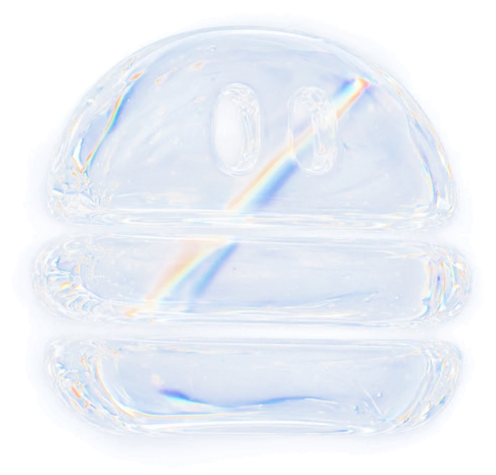

Runs. Every step, tool call and token, laid out as it happened.
PromptAny open tickets about an invoice?
list_directory301 ms
read_file118 ms
AnswerBilling tickets go to Sam.
1.8k tokens$0.0057

McBot Studio turns a graph of agents, models and tools into working agents on your computer. The same graph shows what every agent is doing, remembers and costs.
Works with
Draw it, compile it, run it, watch it. No config files to write by hand.
rm -rf ~/Projects/site/build
$0.00
Press these from any app. Search, run a command, or just ask an agent. Try it below.
A small pill stays at the top of your screen while agents work. Approve a risky step without opening the app.
One download. The engine, the models, the tools and the safety rails come with it.
Its eyes show what it is doing: working, done or stuck.
Every run, memory and cost is a graph you can open.
Runs. Every step, tool call and token, laid out as it happened.
Memory. What each agent has learned. Edit it in place.
Files. Open any folder and browse it as a graph.
Cost. Spend and tokens per agent, model and day. Estimates are labelled.
McBot Studio is the board and the engine: memory, skills, tools and chat apps, running on your own computer.
Plain files you can read. Each agent compiles to a folder of ordinary files.
Answers where you are. Give an agent its own Telegram bot. It answers the people you allow.
Local first. Run on Ollama, LM Studio, vLLM or any OpenAI-compatible API.
Yes. It is free and open source under the MIT licence. You pay only for a cloud model if you choose one; local models cost nothing.
Any local server that speaks the OpenAI API, such as Ollama, LM Studio, llama.cpp, vLLM or Jan, and any cloud API that does too, such as OpenRouter, OpenAI, Anthropic, Gemini, Groq, DeepSeek or Mistral. Give an agent a second model and it becomes the backup.
No. The engine (Hermes Agent) ships inside the app. The first launch prepares it in the background, which takes a few minutes once.
It stays on your computer: boards, memory, files and keys. Only the model you pick sees your prompts. There is no account and no McBot cloud.
Risky commands stop and ask you first, in the app or on the island. You can allow once, allow for the chat, or deny, and Stop always ends a run within seconds.
A team you can see and change: agents, models and tools as a graph that compiles into real files, with every run, memory and cost on screen.
macOS (Apple silicon and Intel), Windows 10 and 11, and Linux (AppImage and .deb).
Install McBot Studio, open it, start drawing.
curl -fsSL https://mcbot.studio/install.sh | shFree and open source, not signed yet, so your computer asks once. macOS: open McBot Studio, then System Settings → Privacy & Security → Open Anyway. Windows: More info → Run anyway. The first launch prepares the engine in a few minutes. All releases on GitHub.
Read the code, run it yourself, make it better.